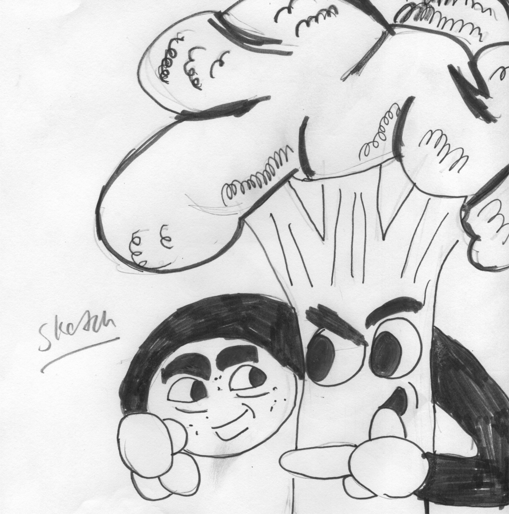

Fridge Fever

Hello
Welcome to the official website of the web comic series Fridge Fever, where strange food become friends.
Fridge Fever is a web comic created by Timothy DaMour that focus on the shenanigans of food left behind in a fridge in an abandoned house in Michigan laid wasted by nuclear fallout.
Hence the reason why the food act and talk... Fridge Fever hopes to offer a family fun experience to not just kids but to an general audience as well...
So we hope you'll enjoy your stay here and enjoy the madness of Bobby, Grump, and the rest of the crew here at Fridge Fever. Here where...
Where strange food become friends